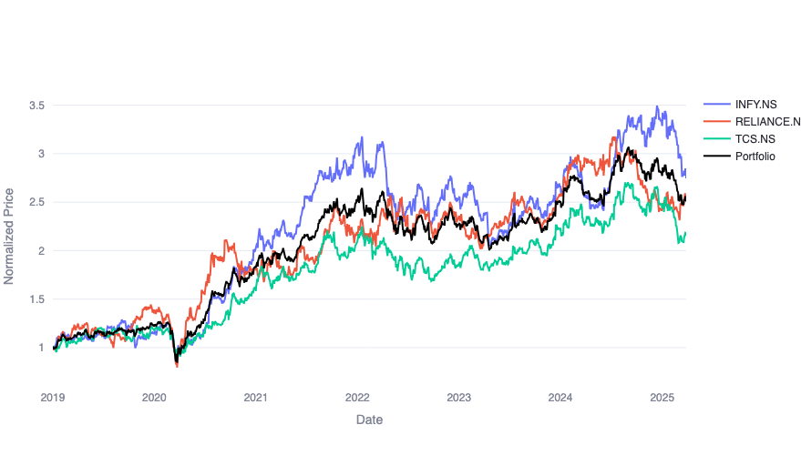
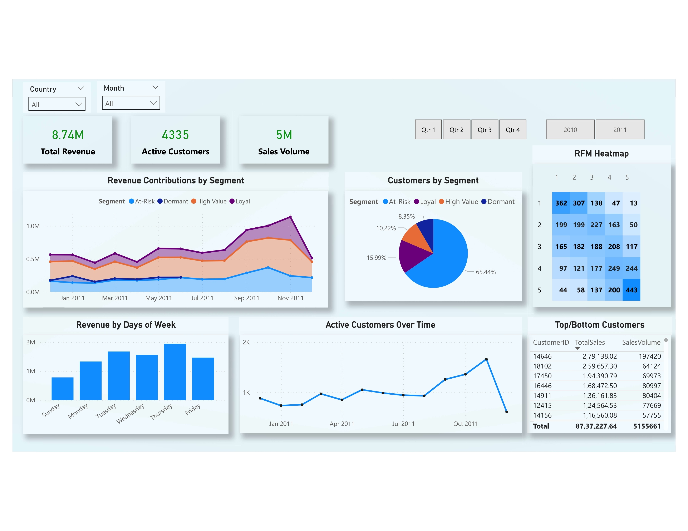

Investment Portfolio Tracker
Python · Streamlit · Plotly · yfinance
A dynamic web application to monitor and visualize investment portfolios. Users can create portfolios, track performance metrics, and compare returns with benchmarks like NIFTY 50 and SENSEX.

Customer Segmentation using RFM Analysis
Python · PowerBI · Pandas · Seaborn · Matplotlib
Performed RFM (Recency, Frequency, Monetary) analysis on e-commerce data to segment customers, aiding in targeted marketing strategies.
Exploratory and Advanced SQL Data Analysis
SQL
Leveraged SQL to perform comprehensive data analysis on sales, customers, and products, including EDA and advanced analytics to uncover business insights.